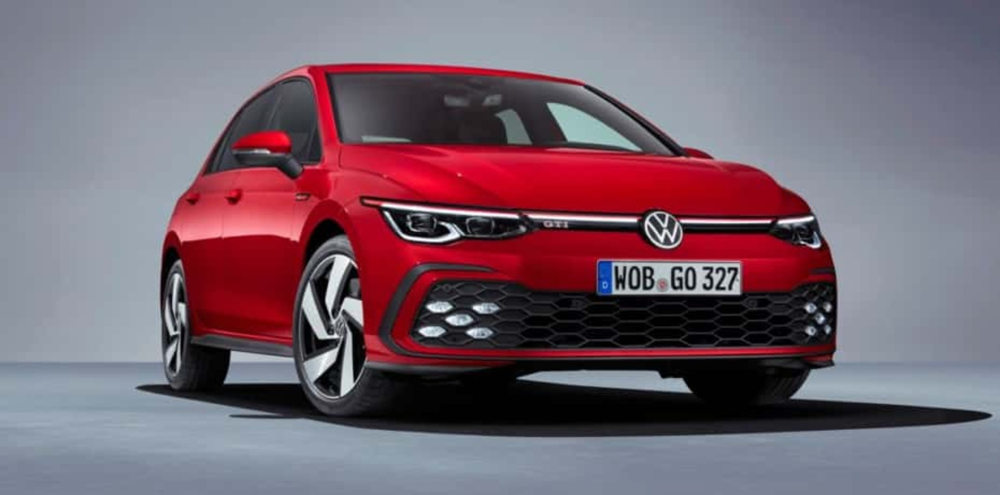

Golf GTI Mark 1 (MK1)
Su desarrolló comenzó en 1974, con media docena de empleados Volkswagen incluyendo a Anton Konrad, quien era jefe de prensa de la Marca en aquella época. El plan era crear una versión deportiva de Volkswagen Golf y cabe resaltar que este plan era secreto.

El primer Golf GTI fue presentado en el International Motor Show (IAA) de Frankfurt en septiembre de 1975 y tuvo tan buen recibimiento que fue necesario acelerar su producción. Este carro deportivo contaba con un motor de inyección de combustible que generaba 110 Hp. En este momento, el Golf deportivo no tenía nombre.
Golf GTI Mark 2 (MK2)
Tras el éxito arrollador del primer Golf GTI, la segunda generación perpetuaba el concepto y el diseño de su antecesor. La insignia GTI, con las líneas rojas en el radiador y los asientos deportivos a cuadros, se convirtieron en características icónicas del modelo. En esta segunda generación, dada a conocer en 1984, bajó un poco la potencia máxima del motor a 107 Hp, ya que le fue instalado un convertidor catalítico. Sin embargo, esto se compensó dos años después con la instalación de un nuevo motor de 16 válvulas que generaba 129 Hp.

Golf GTI Mark 3 (MK3)
La tercera generación de Golf GTI llegó en 1991. Las líneas de diseño se suavizaron un poco, y el cambio más significativo fue en el frontal: desaparecieron los faros dobles de la segunda generación de GTI y fueron reemplazados por cuerpos de iluminación integrales. La rejilla del radiador contó con tres barras horizontales gruesas que lucen más cortas. El alerón delantero era del mismo color que el automóvil, con un área inferior que presentaba una toma de aire dividida y el emblema GTI se volvió color cromo y se ubicó cerca del logo. Cabe mencionar que en 1996 se dio a conocer una nueva versión especial para conmemorar el 20 aniversario de Golf GTI.


Edicion especial 1996 20° aniversario
Golf GTI Mark 4 (MK4)
Introducida en 1998, la cuarta generación de Golf GTI fue un poco más modesta en diseño y cambió detalles como la línea roja en la parrilla del radiador. No obstante, este fue el punto de partida para renovar el diseño de Golf GTI. En términos de equipamiento, la cuarta generación de Golf GTI se volvió más veloz cuando fue equipado con un motor de 180 Hp que permitió alcanzar una velocidad de 228 km/h. Este motor fue parte de una versión lanzada por el 25 aniversario de GTI que fascinó a los fans de este auto.


Edicion 25° aniversario
Golf GTI Mark 5 (MK5)
En el año 2003 se presentó el prototipo de Golf GTI en el lugar donde empezó todo: el International Motor Show (IAA) de Frankfurt. La versión de producción fue presentada en el Paris Motor Show del 2004 y su lanzamiento se llevó a cabo en noviembre de ese año. Esta versión llegaba con un diseño refinado, motor de 200 Hp turbocargado y de extraordinario rendimiento. Otras de las características llamativas fueron los rines de diseño Denver y la parrilla negra del radiador en forma de V. Este vehículo podía acelerar de cero a 100 km/h en solo 7.2 segundos. También contaba con la nueva transmisión automática de doble embrague (mejor conocida como DSG) que reducía este tiempo de aceleración máxima a 6.9 segundos y podía llegar a 235 km/h.

Cuando se cumplió el 30 aniversario de Golf GTI, en el año 2006, se presentó la versión especial que era la reencarnación de "Pirelli GTI" salida a la venta en 2007.

Edicion 30° aniversario
Un dato interesante es el concept car Golf GTI A5 W12 del 2007 con motor bi-turbo de 12 cilindros que desarrollaba 650 Hp de potencia con una velocidad tope de 325 km/h haciendo un tiempo de cero a 100 km/h en tan sólo 3.7 segundos. Este modelo nunca se vendió al público, sólo fue experimental.
Golf GTI Mark 6 (MK6)
Fue en el año 2009 que se presentó la sexta generación y contó con la leyenda de las carreras Hans-Joachim Stuck. Esta versión presentaba el bloqueo diferencial electrónico (XDS) por primera vez y un motor que alcanzaba la velocidad máxima de 240 km/h. Además, se incorporó un generador de sonido y un nuevo sistema de escape con tubo de escape de cada lado, que entregaba un sonido acorde con la potencia del motor y la experiencia de manejo.

Para el 35 aniversario del modelo se lanzó "Golf GTI Edition 35", generando 235 Hp. Este modelo era de los más rápidos, ya que alcanzaba los 100 km/h desde cero en solo 6.6 segundos.

Edicion 35° aniversario
Golf GTI Mark 7 (MK7)
La séptima generación fue lanzada en el año 2013, con una versión básica de motor que llegaba a los 220 Hp, mientras que la versión Golf GTI Performance podía alcanzar los 230 Hp. Como esta versión fue construida con la plataforma MQB, se redujo el peso de GTI, haciéndolo más ágil. La versión de 230 Hp con transmisión manual fue el primer Golf GTI en alcanzar 250 km/h. Este modelo fue la base del Golf GTI Clubsport, presentado en acción en el circuito de carreras de Portimão en noviembre de 2015, que fue capaz de entregar hasta 290 Hp gracias a una función overboost. En solo 5.9 segundos pudo acelerar de cero a 100 km/h.


GTI Performance

GTI Clubsport
Golf GTI Mark 8 (MK8)
Con mayor dinamismo y eficiencia, el nuevo Golf GTI llegó como un auto deportivo de alta tecnología que mantenía el ADN de sus predecesores, pero sumaba un toque digital acorde con esta generación. El diseño del panal completamente abierta y sus faros LED en forma de X, le dieron un aspecto nuevo y fresco.
- ¿Cuándo salió a la venta el primer Golf GTI?
- En junio de 1976 salió a la venta el primer GTI Golf a un precio de 13, 850 marcos alemanes, con un motor que podía alcanzar 131 km/h, un marco negro alrededor de las ventanas traseras, bordes rojos alrededor de la rejilla del radiador, asientos deportivos a cuadros, la palanca de cambios de la pelota de golf y un volante deportivo.